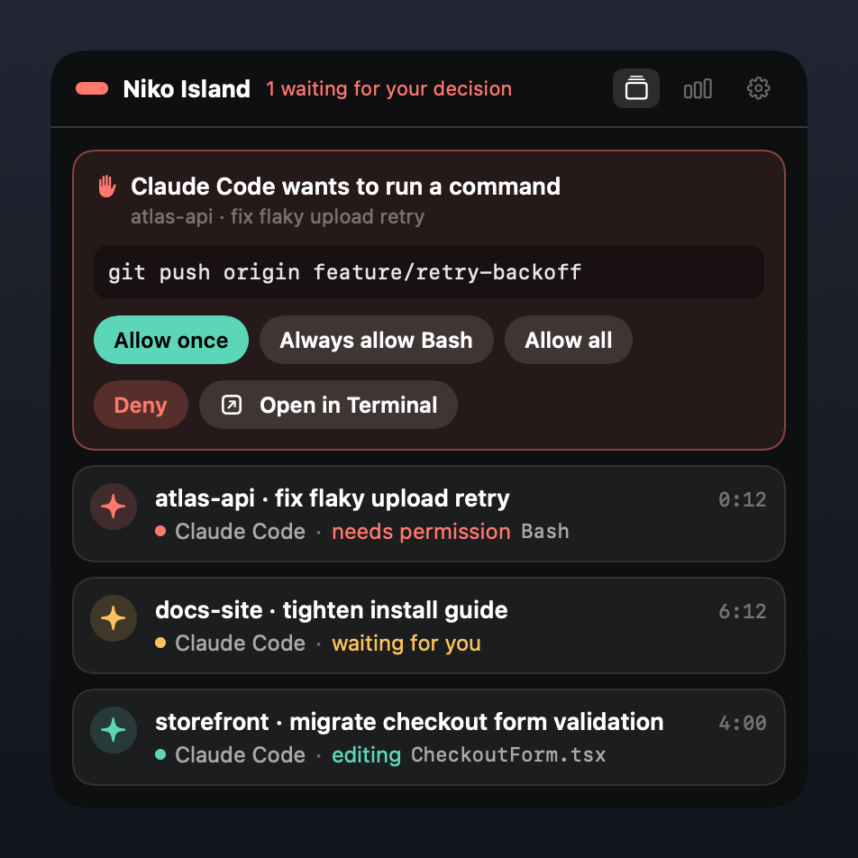
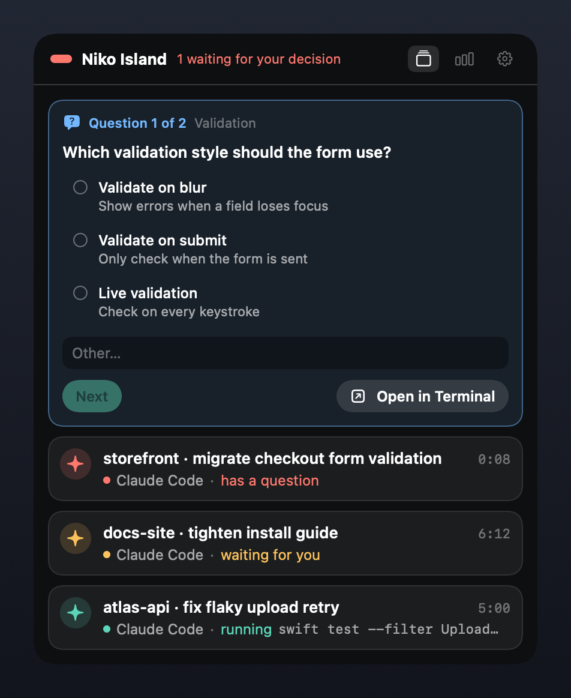
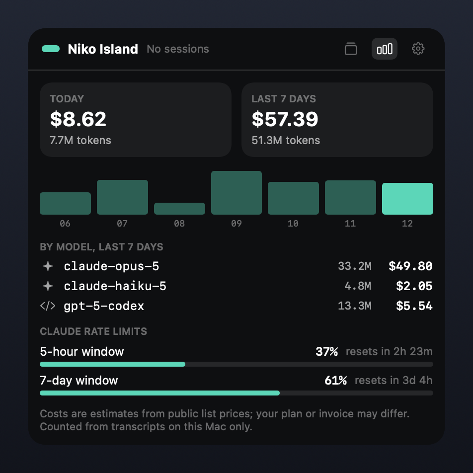

Your agents keep working. You keep your window.
Niko Island sits in the macOS menu bar, shows what every AI coding agent in your terminals is doing, and lets you approve their requests and answer their questions right there. Free, open source, and entirely local.
macOS 14 or later · Apple silicon and Intel · MIT license

Rendered from the app's own views with sample sessions.
Everything in one small panel
Built for the moment an agent stops and waits for you while you are looking at something else.
Live status
One card per session: thinking, reading a file, editing, running a command. You see which one is busy and which one is waiting for you.
Approvals in place
Allow once, always allow a tool, allow everything for the session, deny, or send the decision back to the terminal. A request never resolves on its own.
Question wizard
When an agent asks you to choose, answer its questions step by step, single or multiple choice, without switching windows.
Notifications that take you back
Click a notification and the right Terminal.app or iTerm2 tab comes to the front, tmux panes included.
Usage and cost, locally
Tokens and estimated cost per model for today and the last seven days, read from the transcripts already on your disk.
An installer you can trust
It scans first, backs up, verifies and rolls back on failure. Uninstalling removes only what it added, and your agents keep working.


Works with the agents you run
Claude Code is supported end to end. The others are experimental: you switch them on yourself, and the panel shows their status.
No telemetry. No account. All local.
A tool that sits between you and your agents should be easy to check. Here is everything it does with your data.
- Nothing phones home. There is no analytics, crash reporting or update check in the app.
- One optional download, off by default: a public list of model prices for the cost estimates. That is the only network code in the project.
- Owner-only local channel. Agents reach the app through a socket in a private directory, and the app checks who is calling on every message.
- Trimmed at the source. Tool output is dropped and long text is shortened before an event leaves the agent. The usage database holds numbers and identifiers, never prompts or replies.
- Your credentials are never read. No keys, no tokens, no proxying.
- Hooks you can audit. Every entry the installer writes contains
niko-bridge. Search for it any time.
~/.niko-island/ ├── bin/ bridge and status-line launchers ├── run/ local socket, owner-only ├── cache/ rate limits, optional price list ├── data/usage/ token counts in SQLite └── logs/ redacted diagnostics
Up and running in about 30 seconds
The app is ad-hoc signed because the project has no Apple Developer account. macOS asks you to confirm the first launch; after that it opens like any other app.
Download and unzip
Move it to Applications and open it
Either right-click the app and choose Open twice, or clear the quarantine flag:
mv "Niko Island.app" /Applications/ xattr -cr "/Applications/Niko Island.app" open "/Applications/Niko Island.app"
Connect Claude Code
Look at the plan first. Nothing changes until the second command. You can also do this from Settings in the panel.
# show what would change "/Applications/Niko Island.app/Contents/MacOS/niko-island" install --dry-run # apply it (a backup of your config is kept next to it) "/Applications/Niko Island.app/Contents/MacOS/niko-island" install
Changed your mind?
Uninstalling removes only its own entries and restores your status line. Your agents keep working.
~/.niko-island/bin/niko-island uninstall
Open, on purpose
There are polished closed-source apps for this job. Here is the honest trade if you would rather read the code.
| Niko Island | A typical closed-source alternative | |
|---|---|---|
| Price | Free | Paid license or subscription |
| Source | MIT, all of it | Not available |
| License key | None | Usually required |
| Tracking | None, and you can verify it | You take their word for it |
| Direction | Issues and pull requests | The vendor's roadmap |
| Code signing | Ad-hoc: one extra click at first launch | Usually notarized |
| Agent coverage today | One stable integration, the rest experimental | Often broader |